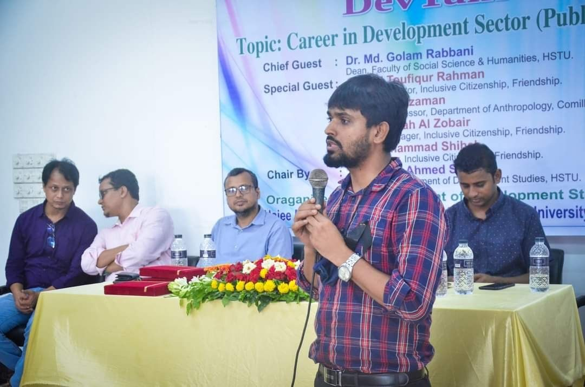
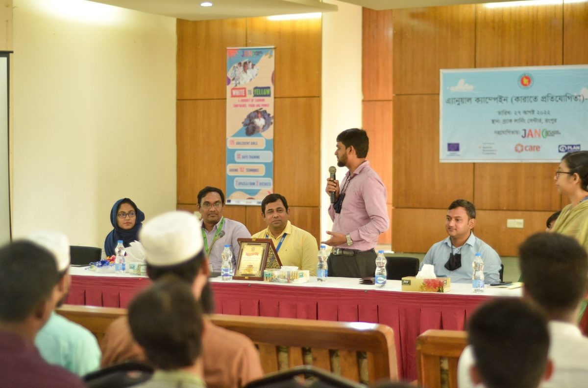
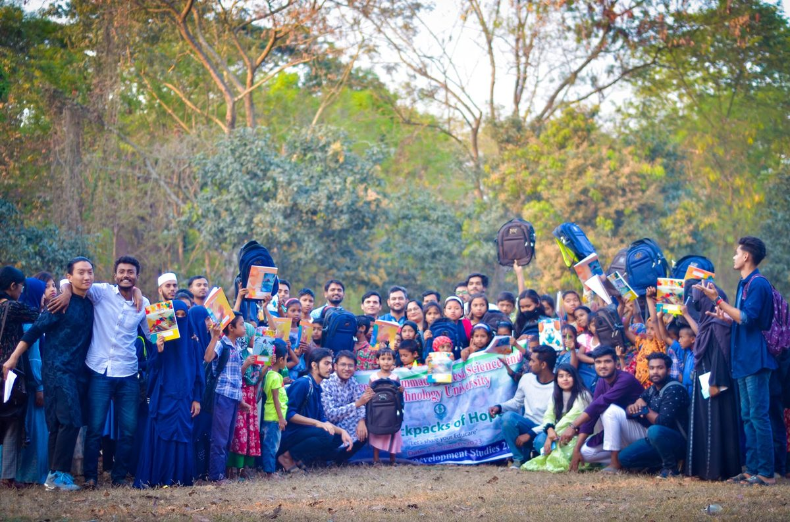
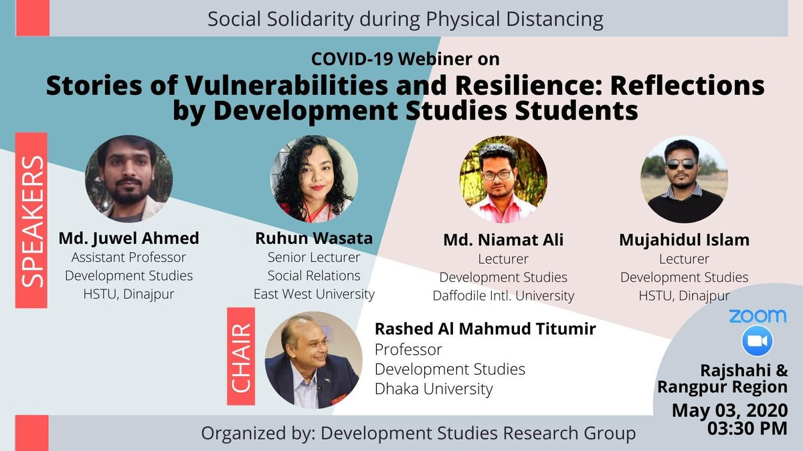
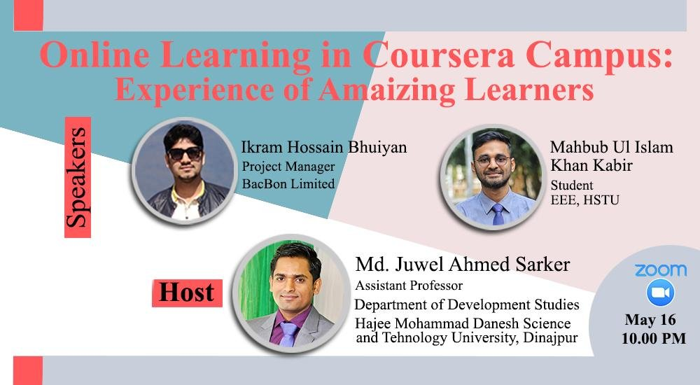

Department Representative, Graduate-Professional Student Congress (GPSC), Department of Education Reform
[Draft — add 1–2 sentences on what this role involves, e.g. representing graduate student interests, relaying department concerns to GPSC.]
I take service — to the field, to my institution, and to the broader academic community — as part of the job, not an add-on to it. Below is a summary of my ongoing professional and departmental service.
Department Representative, Graduate-Professional Student Congress (GPSC), Department of Education Reform
[Draft — add 1–2 sentences on what this role involves, e.g. representing graduate student interests, relaying department concerns to GPSC.]
Founder, DevTalk
An academia–industry collaboration initiative connecting Development Studies students with practitioners and employers in Bangladesh's development sector, hosting invited talks with university leadership and sector professionals on careers in development work.


Backpacks of Hope
A school-supply and backpack donation drive — “Let's share your Educare” — providing bags and educational materials to underprivileged children. Covered by Ekushey Television (ETV).
[Draft — confirm your exact role here, e.g. organizer/coordinator, so I can credit it precisely.]

COVID-19 Webinar Series, Development Studies Research Group
Co-organized a series of webinars held during COVID-19-related university closures, bringing together faculty from HSTU, Dhaka University, East West University, and Daffodil International University to discuss the pandemic's social and economic impact. Featured session: “Stories of Vulnerabilities and Resilience: Reflections by Development Studies Students” (May 2020).
[Draft — confirm your exact role (e.g. founding/co-organizing member of the Development Studies Research Group) and, if there were other sessions in the series, add them here.]

Founder, Bangladesh Open Learning Society (BOLS)
A 10,000+ member online learning community that provided free access to courses and study resources for students during COVID-19-related university closures, including hosted sessions such as “Online Learning in Coursera Campus: Experience of Amazing Learners” (May 2020).

Led undergraduate curriculum development
[Draft — add 1–2 sentences on the scope of this work, e.g. which courses or program requirements were revised and why.]